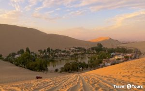
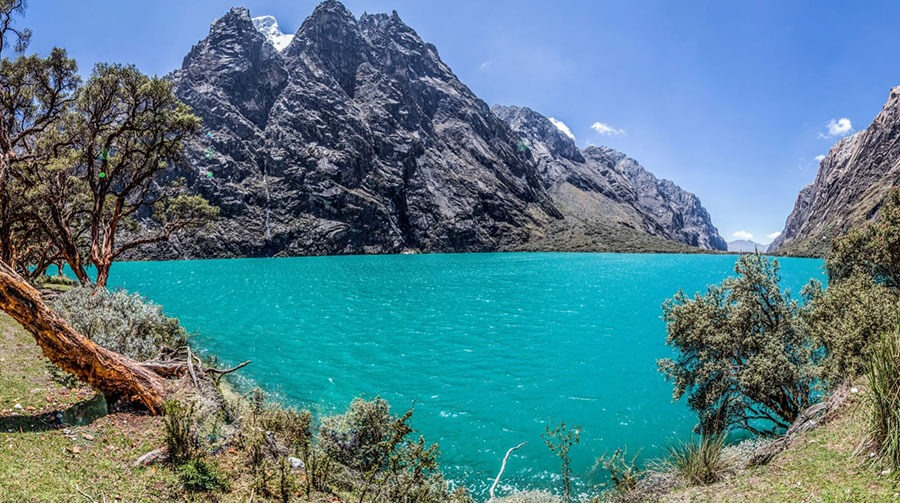
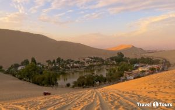
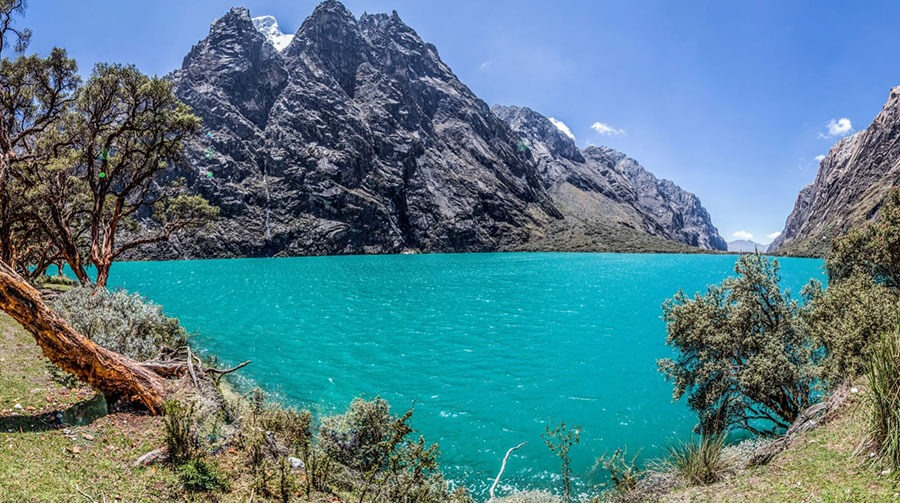

Lugares Turísticos
| Nombre | Ubicación |
|---|---|
| Machu Picchu | Ubicada en la provincia de Urubamba, en el departamento del Cuzco, en Perú |
| Laguna Huacachina | A 5 km minutos al oeste de la ciudad de Ica. |
| Parque nacional huascarán | Ubicada en las provincias de Yungay, Huaraz |
- Machu Picchu:Un lugar místico lleno de una paz incomparable, Machu Picchu es uno de los lugares más visitados del mundo. A 2.300 metros sobre el nivel del mar, el destino es una de las 7 maravillas del mundo moderno, por ello no puedes dejar de visitarla.
- Laguna Huacachina La Laguna de Huacachina es un oasis en medio del desierto de Ica que está rodeado de dunas, eucaliptos, palmeras y los huarangos. .
- Parque nacional huascarán: El Parque Nacional Huascarán (PNH), localizado en la zona norte centro del país, es una de las áreas naturales protegiás más emblemáticas del país puesto que protege una de las zonas con la mayor diversidad biológica y cultural que tiene el Perú.
 


